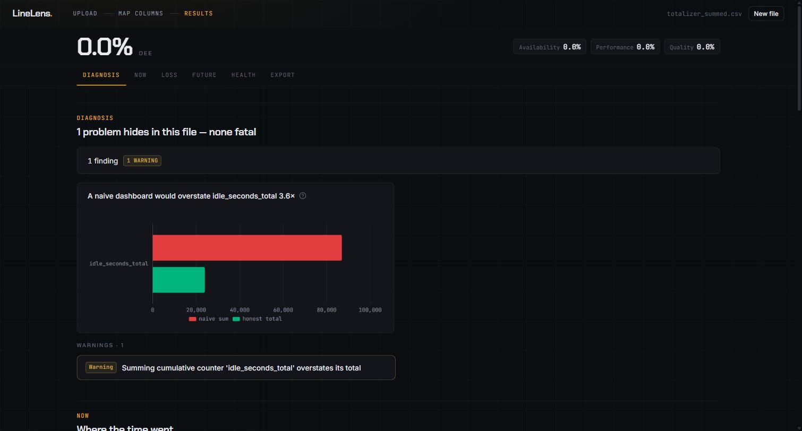
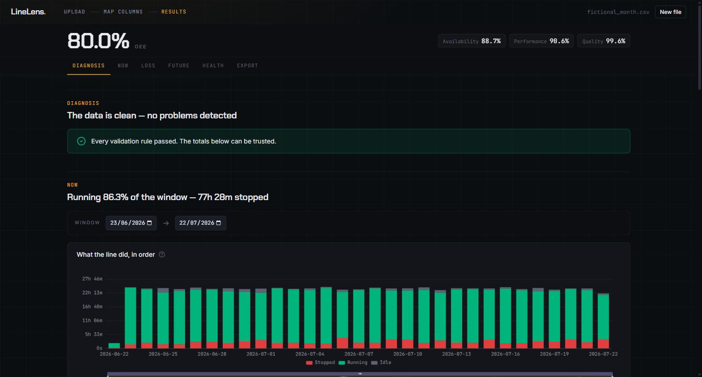
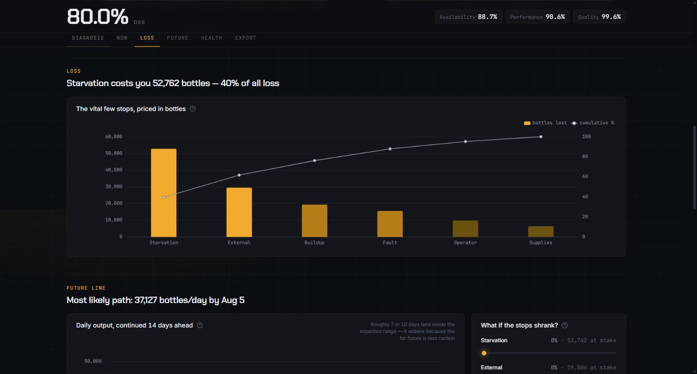
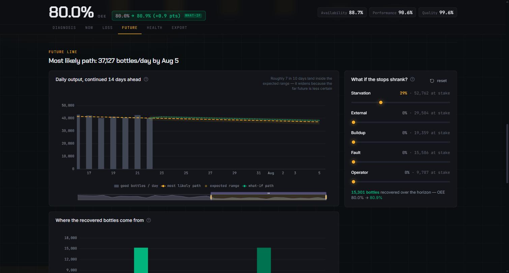

Machine-data diagnostics
Your dashboard is reporting numbers 3.6× too high.
Industrial dashboards routinely sum cumulative totalizers. A totalizer is an odometer. Add one up instead of differencing it and the idle time, the parts count and the downtime all come out inflated, all reported with total confidence. LineLens finds that mistake in a CSV export and puts the naive number next to the honest one.
Idle seconds, one machine, one day
totalizer_summed.csvSeventeen and a half hours of idle time that never happened. The staffing plan inherits the error. So does the maintenance schedule, and so does the capex case.
These figures come from the demo dataset shipped in the repository, built to reproduce the fault. Run it yourself in five minutes and you will get the same two numbers.
Evidence
The tool prints the number. Nobody wrote it in.
The diagnosis engine writes the heading below from the data in the file. There is no model in this path and no estimate. LineLens classifies the counter as cumulative, differences it, and compares the result against what a naive sum would have reported.

idle_seconds_total overstates it.
How it works
Map the columns once. The file becomes a command deck.
Mapping is the only step that asks anything of you, and it guesses first. From there, one screen answers the questions a plant manager actually asks: what did the line do, what did the stops cost, where is it heading, and is it wearing out.



Limits
What this is not.
A tool that claims no limits is selling something. These are the ones that matter before you spend an afternoon on it.
- Not production software. Single user, local, no authentication and no hardening.
- It reads a CSV you export. There is no live PLC or historian connector.
- The datasets shown here are synthetic, built to reproduce faults honestly rather than to flatter the tool.
- The forecast is a band with a stated coverage, not a promise about next Tuesday.
- Predictive maintenance means a due window from a service counter, not failure prediction from labelled faults.
Contact
Andrei Razvan Alexandru
I build the chain from the counter to the dashboard, and I check that what comes out the far end is true. If your plant data is telling you something you half believe, that is the conversation I want.